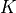
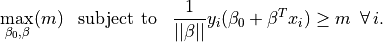

Classification¶
In density estimation we estimate joint probability distributions from multivariate data sets to identify the inherent clustering. This is essentially unsupervised classification
If we have labels for some of these data points (e.g., an object is tall, short, red, or blue) we can develop a relationship between the label and the properties of a source. This is supervised classification
Classification, regression, and density estimation are all related. For example, the regression function is the best estimated value of  given a value of
given a value of  . In classification is categorical and the called the discriminant function
. In classification is categorical and the called the discriminant function
Using density estimation for classification is referred to as generative classification (we have a full model of the density for each class or we have a model which describes how data could be generated from each class).
Classification that finds the decision boundary that separates classes is called discriminative classification
Both have their place in astrophysical classification.
Classification loss: how well are we doing?¶
The first question we need to address is how we score (defined the success of our classification)
We can define a loss function. A zero-one loss function assigns a value of one for a misclassification and zero for a correct classification (i.e. we will want to minimize the loss).
If is the best guess value of , the classification loss,  , is
, is
The expectation (mean) value of the loss is called the classification risk
This is related to regression loss functions: and risk .
We can then define:
or
Comparing the performance of classifiers¶
Best performance is a bit of a subjective topic (e.g. star-galaxy separation for correlation function studies or Galactic streams studies). We trade contamination as a function of completeness and this is science dependent.
ROC curves: Receiver Operating Characteristic curves
Plot the true-positive vs the false-positive rate
Initially used to analyze radar results in WWII (a very productive era for statistics…).
One concern about ROC curves is that they are sensitive to the relative sample sizes (if there are many more background events than source events small false positive results can dominate a signal). For these cases we we can plot efficiency (1 - contamination) vs completeness
import numpy as np
from matplotlib import pyplot as plt
from sklearn.naive_bayes import GaussianNB
from sklearn.discriminant_analysis import (LinearDiscriminantAnalysis,
QuadraticDiscriminantAnalysis)
from sklearn.linear_model import LogisticRegression
from sklearn.neighbors import KNeighborsClassifier
from sklearn.tree import DecisionTreeClassifier
from sklearn.svm import SVC
from astroML.classification import GMMBayes
from sklearn.metrics import roc_curve
from astroML.utils import split_samples, completeness_contamination
from astroML.datasets import fetch_rrlyrae_combined
We will use the RR Lyrae dataset. We get the data here, and split it into training and testing sets, and then use the same sets for all the examples below.
#----------------------------------------------------------------------
# get data and split into training & testing sets
X, y = fetch_rrlyrae_combined()
X = X[:, [1, 0, 2, 3]] # rearrange columns for better 1-color results
(X_train, X_test), (y_train, y_test) = split_samples(X, y, [0.75, 0.25],
random_state=0)
N_tot = len(y)
N_st = np.sum(y == 0)
N_rr = N_tot - N_st
N_train = len(y_train)
N_test = len(y_test)
N_plot = 5000 + N_rr
#------------------------------------------------------------
# Fit all the models to the training data
def compute_models(*args):
names = []
probs = []
for classifier, kwargs in args:
print(classifier.__name__)
clf = classifier(**kwargs)
clf.fit(X_train, y_train)
y_probs = clf.predict_proba(X_test)[:, 1]
names.append(classifier.__name__)
probs.append(y_probs)
return names, probs
names, probs = compute_models((GaussianNB, {}),
(LinearDiscriminantAnalysis, {}),
(QuadraticDiscriminantAnalysis, {}),
(LogisticRegression,
dict(class_weight='balanced')),
(KNeighborsClassifier,
dict(n_neighbors=10)),
(DecisionTreeClassifier,
dict(random_state=0, max_depth=12,
criterion='entropy')),
(GMMBayes, dict(n_components=3, tol=1E-5,
covariance_type='full')))
#------------------------------------------------------------
# Plot ROC curves and completeness/efficiency
fig = plt.figure(figsize=(10, 5))
fig.subplots_adjust(left=0.1, right=0.95, bottom=0.15, top=0.9, wspace=0.25)
# ax2 will show roc curves
ax1 = plt.subplot(121)
# ax1 will show completeness/efficiency
ax2 = plt.subplot(122)
labels = dict(GaussianNB='GNB',
LinearDiscriminantAnalysis='LDA',
QuadraticDiscriminantAnalysis='QDA',
KNeighborsClassifier='KNN',
DecisionTreeClassifier='DT',
GMMBayes='GMMB',
LogisticRegression='LR')
thresholds = np.linspace(0, 1, 1001)[:-1]
# iterate through and show results
for name, y_prob in zip(names, probs):
fpr, tpr, thresh = roc_curve(y_test, y_prob)
# add (0, 0) as first point
fpr = np.concatenate([[0], fpr])
tpr = np.concatenate([[0], tpr])
ax1.plot(fpr, tpr, label=labels[name])
comp = np.zeros_like(thresholds)
cont = np.zeros_like(thresholds)
for i, t in enumerate(thresholds):
y_pred = (y_prob >= t)
comp[i], cont[i] = completeness_contamination(y_pred, y_test)
ax2.plot(1 - cont, comp, label=labels[name])
ax1.set_xlim(0, 0.04)
ax1.set_ylim(0, 1.02)
ax1.xaxis.set_major_locator(plt.MaxNLocator(5))
ax1.set_xlabel('false positive rate')
ax1.set_ylabel('true positive rate')
ax1.legend(loc=4)
ax2.set_xlabel('efficiency')
ax2.set_ylabel('completeness')
ax2.set_xlim(0, 1.0)
ax2.set_ylim(0.2, 1.02)
plt.show()
GaussianNB
LinearDiscriminantAnalysis
QuadraticDiscriminantAnalysis
LogisticRegression
KNeighborsClassifier
DecisionTreeClassifier
GMMBayes
Linear and quadratic discriminant analysis¶
Linear discriminant analysis (LDA) assumes the class distributions have identical
covariances for all  classes (all classes are a set of shifted Gaussians). The
optimal classifier is derived from the log of the class
posteriors
classes (all classes are a set of shifted Gaussians). The
optimal classifier is derived from the log of the class
posteriors
with the mean of class and the covariance of the
Gaussians. The class dependent covariances that would normally give rise to a quadratic dependence on
cancel out if they are assumed to be constant. The Bayes classifier is, therefore, linear with respect to .
The discriminant boundary between classes is the line that minimizes the overlap between Gaussians
Relaxing the requirement that the covariances of the
Gaussians are constant, the discriminant function
becomes quadratic in  :
:
This is sometimes known as quadratic discriminant analysis (QDA)
#----------------------------------------------------------------------
# perform LinearDiscriminantAnalysis
classifiers = []
predictions = []
Ncolors = np.arange(1, X.shape[1] + 1)
for nc in Ncolors:
clf = LinearDiscriminantAnalysis()
clf.fit(X_train[:, :nc], y_train)
y_pred = clf.predict(X_test[:, :nc])
classifiers.append(clf)
predictions.append(y_pred)
completeness, contamination = completeness_contamination(predictions, y_test)
print("completeness", completeness)
print("contamination", contamination)
completeness [0.48175182 0.67153285 0.67153285 0.67153285]
contamination [0.85300668 0.80590717 0.80467091 0.80590717]
# perform QuadraticDiscriminantAnalysis
qclassifiers = []
qpredictions = []
for nc in Ncolors:
qlf = QuadraticDiscriminantAnalysis()
qlf.fit(X_train[:, :nc], y_train)
qy_pred = qlf.predict(X_test[:, :nc])
qclassifiers.append(qlf)
qpredictions.append(qy_pred)
qpredictions = np.array(qpredictions)
qcompleteness, qcontamination = completeness_contamination(qpredictions, y_test)
print("completeness", qcompleteness)
print("contamination", qcontamination)
completeness [0.48175182 0.68613139 0.73722628 0.78832117]
contamination [0.85201794 0.79249448 0.77555556 0.75675676]
#------------------------------------------------------------
# Compute the decision boundary
clf = classifiers[1]
qlf = qclassifiers[1]
xlim = (0.7, 1.35)
ylim = (-0.15, 0.4)
xx, yy = np.meshgrid(np.linspace(xlim[0], xlim[1], 71),
np.linspace(ylim[0], ylim[1], 81))
Z = clf.predict_proba(np.c_[yy.ravel(), xx.ravel()])
Z = Z[:, 1].reshape(xx.shape)
QZ = qlf.predict_proba(np.c_[yy.ravel(), xx.ravel()])
QZ = QZ[:, 1].reshape(xx.shape)
#----------------------------------------------------------------------
# plot the results
fig = plt.figure(figsize=(8, 4))
fig.subplots_adjust(bottom=0.15, top=0.95, hspace=0.0,
left=0.1, right=0.95, wspace=0.2)
# left plot: data and decision boundary
ax = fig.add_subplot(121)
im = ax.scatter(X[-N_plot:, 1], X[-N_plot:, 0], c=y[-N_plot:],
s=4, lw=0, cmap=plt.cm.Oranges, zorder=2)
im.set_clim(-0.5, 1)
im = ax.imshow(Z, origin='lower', aspect='auto',
cmap=plt.cm.binary, zorder=1,
extent=xlim + ylim)
im.set_clim(0, 1.5)
ax.contour(xx, yy, Z, [0.5], linewidths=2., colors='k')
ax.set_xlim(xlim)
ax.set_ylim(ylim)
ax.set_xlabel('$u-g$')
ax.set_ylabel('$g-r$')
# right plot: qda
ax = fig.add_subplot(122)
im = ax.scatter(X[-N_plot:, 1], X[-N_plot:, 0], c=y[-N_plot:],
s=4, lw=0, cmap=plt.cm.Oranges, zorder=2)
im.set_clim(-0.5, 1)
im = ax.imshow(QZ, origin='lower', aspect='auto',
cmap=plt.cm.binary, zorder=1,
extent=xlim + ylim)
im.set_clim(0, 1.5)
ax.contour(xx, yy, QZ, [0.5], linewidths=2., colors='k')
ax.set_xlim(xlim)
ax.set_ylim(ylim)
ax.set_xlabel('$u-g$')
ax.set_ylabel('$g-r$')
plt.show()
GMM and Bayes classification¶
The natural extension to the Gaussian assumptions is to use GMM’s to learn the density distribution.
The number of Gaussian components  must be chosen for each class independently
# GMM-bayes takes several minutes to run, and is order[N^2]
# truncating the dataset can be useful for experimentation.
#X_tr = X[::10]
#y_tr = y[::10]
#----------------------------------------------------------------------
# perform GMM Bayes
Ncolors = np.arange(1, X.shape[1] + 1)
Ncomp = [1, 3]
def compute_GMMbayes(Ncolors, Ncomp):
classifiers = []
predictions = []
for ncm in Ncomp:
classifiers.append([])
predictions.append([])
for nc in Ncolors:
clf = GMMBayes(ncm, tol=1E-5, covariance_type='full')
clf.fit(X_train[:, :nc], y_train)
y_pred = clf.predict(X_test[:, :nc])
classifiers[-1].append(clf)
predictions[-1].append(y_pred)
return classifiers, predictions
classifiers, predictions = compute_GMMbayes(Ncolors, Ncomp)
completeness, contamination = completeness_contamination(predictions, y_test)
print("completeness", completeness)
print("contamination", contamination)
#------------------------------------------------------------
# Compute the decision boundary
clf = classifiers[1][1]
xlim = (0.7, 1.35)
ylim = (-0.15, 0.4)
xx, yy = np.meshgrid(np.linspace(xlim[0], xlim[1], 71),
np.linspace(ylim[0], ylim[1], 81))
Z = clf.predict_proba(np.c_[yy.ravel(), xx.ravel()])
Z = Z[:, 1].reshape(xx.shape)
#----------------------------------------------------------------------
# plot the results
fig = plt.figure(figsize=(8, 4))
fig.subplots_adjust(bottom=0.15, top=0.95, hspace=0.0,
left=0.1, right=0.95, wspace=0.2)
# left plot: data and decision boundary
ax = fig.add_subplot(121)
im = ax.scatter(X[-N_plot:, 1], X[-N_plot:, 0], c=y[-N_plot:],
s=4, lw=0, cmap=plt.cm.Oranges, zorder=2)
im.set_clim(-0.5, 1)
im = ax.imshow(Z, origin='lower', aspect='auto',
cmap=plt.cm.binary, zorder=1,
extent=xlim + ylim)
im.set_clim(0, 1.5)
ax.contour(xx, yy, Z, [0.5], colors='k')
ax.set_xlim(xlim)
ax.set_ylim(ylim)
ax.set_xlabel('$u-g$')
ax.set_ylabel('$g-r$')
# plot completeness vs Ncolors
ax = fig.add_subplot(222)
ax.plot(Ncolors, completeness[0], '^--k', ms=6, label='N=%i' % Ncomp[0])
ax.plot(Ncolors, completeness[1], 'o-k', ms=6, label='N=%i' % Ncomp[1])
ax.xaxis.set_major_locator(plt.MultipleLocator(1))
ax.yaxis.set_major_locator(plt.MultipleLocator(0.2))
ax.xaxis.set_major_formatter(plt.NullFormatter())
ax.set_ylabel('completeness')
ax.set_xlim(0.5, 4.5)
ax.set_ylim(-0.1, 1.1)
ax.grid(True)
# plot contamination vs Ncolors
ax = fig.add_subplot(224)
ax.plot(Ncolors, contamination[0], '^--k', ms=6, label='N=%i' % Ncomp[0])
ax.plot(Ncolors, contamination[1], 'o-k', ms=6, label='N=%i' % Ncomp[1])
ax.legend(loc='lower right',
bbox_to_anchor=(1.0, 0.78))
ax.xaxis.set_major_locator(plt.MultipleLocator(1))
ax.yaxis.set_major_locator(plt.MultipleLocator(0.2))
ax.xaxis.set_major_formatter(plt.FormatStrFormatter('%i'))
ax.set_xlabel('N colors')
ax.set_ylabel('contamination')
ax.set_xlim(0.5, 4.5)
ax.set_ylim(-0.1, 1.1)
ax.grid(True)
plt.show()
/Users/bsipocz/.pyenv/versions/3.9.1/lib/python3.9/site-packages/sklearn/mixture/_base.py:265: ConvergenceWarning: Initialization 1 did not converge. Try different init parameters, or increase max_iter, tol or check for degenerate data.
warnings.warn('Initialization %d did not converge. '
completeness [[0.48175182 0.68613139 0.73722628 0.78832117]
[0. 0.11678832 0.41605839 0.68613139]]
contamination [[0.85201794 0.79249448 0.77605322 0.75675676]
[0. 0.33333333 0.13636364 0.21666667]]
K-nearest neighbours¶
As with density estimation (and kernel density estimation) the intuitive justification is that if  is very close to .
is very close to .
The number of neighbors, , regulates the complexity of the classification. In simplest form, a majority rule classification is adopted, where each of the points votes on the classification. Increasing decreases the variance in the classification but at the expense of an increase in the bias.
Weights can be assigned to individual votes by weighting the vote by the distance to the nearest point.
#----------------------------------------------------------------------
# perform Classification
classifiers = []
predictions = []
Ncolors = np.arange(1, X.shape[1] + 1)
kvals = [1, 10]
for k in kvals:
classifiers.append([])
predictions.append([])
for nc in Ncolors:
clf = KNeighborsClassifier(n_neighbors=k)
clf.fit(X_train[:, :nc], y_train)
y_pred = clf.predict(X_test[:, :nc])
classifiers[-1].append(clf)
predictions[-1].append(y_pred)
completeness, contamination = completeness_contamination(predictions, y_test)
print("completeness", completeness)
print("contamination", contamination)
#------------------------------------------------------------
# Compute the decision boundary
clf = classifiers[1][1]
xlim = (0.7, 1.35)
ylim = (-0.15, 0.4)
xx, yy = np.meshgrid(np.linspace(xlim[0], xlim[1], 71),
np.linspace(ylim[0], ylim[1], 81))
Z = clf.predict(np.c_[yy.ravel(), xx.ravel()])
Z = Z.reshape(xx.shape)
#----------------------------------------------------------------------
# plot the results
fig = plt.figure(figsize=(8, 4))
fig.subplots_adjust(bottom=0.15, top=0.95, hspace=0.0,
left=0.1, right=0.95, wspace=0.2)
# left plot: data and decision boundary
ax = fig.add_subplot(121)
im = ax.scatter(X[-N_plot:, 1], X[-N_plot:, 0], c=y[-N_plot:],
s=4, lw=0, cmap=plt.cm.Oranges, zorder=2)
im.set_clim(-0.5, 1)
im = ax.imshow(Z, origin='lower', aspect='auto',
cmap=plt.cm.binary, zorder=1,
extent=xlim + ylim)
im.set_clim(0, 2)
ax.contour(xx, yy, Z, [0.5], colors='k')
ax.set_xlim(xlim)
ax.set_ylim(ylim)
ax.set_xlabel('$u-g$')
ax.set_ylabel('$g-r$')
ax.text(0.02, 0.02, "k = %i" % kvals[1],
transform=ax.transAxes)
# plot completeness vs Ncolors
ax = fig.add_subplot(222)
ax.plot(Ncolors, completeness[0], 'o-k', ms=6, label='k=%i' % kvals[0])
ax.plot(Ncolors, completeness[1], '^--k', ms=6, label='k=%i' % kvals[1])
ax.xaxis.set_major_locator(plt.MultipleLocator(1))
ax.yaxis.set_major_locator(plt.MultipleLocator(0.2))
ax.xaxis.set_major_formatter(plt.NullFormatter())
ax.set_ylabel('completeness')
ax.set_xlim(0.5, 4.5)
ax.set_ylim(-0.1, 1.1)
ax.grid(True)
# plot contamination vs Ncolors
ax = fig.add_subplot(224)
ax.plot(Ncolors, contamination[0], 'o-k', ms=6, label='k=%i' % kvals[0])
ax.plot(Ncolors, contamination[1], '^--k', ms=6, label='k=%i' % kvals[1])
ax.legend(loc='lower right',
bbox_to_anchor=(1.0, 0.79))
ax.xaxis.set_major_locator(plt.MultipleLocator(1))
ax.yaxis.set_major_locator(plt.MultipleLocator(0.2))
ax.xaxis.set_major_formatter(plt.FormatStrFormatter('%i'))
ax.set_xlabel('N colors')
ax.set_ylabel('contamination')
ax.set_xlim(0.5, 4.5)
ax.set_ylim(-0.1, 1.1)
ax.grid(True)
plt.show()
completeness [[0.22627737 0.3649635 0.46715328 0.54014599]
[0.00729927 0.23357664 0.40145985 0.53284672]]
contamination [[0.78014184 0.53271028 0.44347826 0.41732283]
[0.875 0.44827586 0.24657534 0.23958333]]
Support Vector Machines¶
Find the hyperplane that maximizes the distance of the closest point from either class. This distance is the margin (width of the line before it hits a point). We want the line that maximizes the margin (m).
The points on the margin are called support vectors
If we assume , (+1 is maximum margin, -1 is minimum, 0 is the decision boundary)
The maximum is then just when  etc
etc
The hyperplane which maximizes the margin is given by finding

The constraints can be written as .
Thus the optimization problem is equivalent to minimizing $$
This optimization is a quadratic programming problem (quadratic objective function with linear constraints).
Note that because SVM uses a metric which maximizes the margin rather than a measure over all points in the data sets, it is similar in spirit to the rank-based estimators
The median of a distribution is unaffected by even large perturbations of outlying points, as long as those perturbations do not cross the boundary.
In the same way, once the support vectors are determined, changes to the positions or numbers of points beyond the margin will not change the decision boundary. For this reason, SVM can be a very powerful tool for discriminative classification.
This is why there is a high completeness compared to the other methods: it does not matter that the background sources outnumber the RR Lyrae stars by a factor of 200 to 1. It simply determines the best boundary between the small RR Lyrae clump and the large background clump.
This completeness, however, comes at the cost of a relatively large contamination level.
SVM is not scale invariant so it often worth rescaling the data to [0,1] or to whiten it to have a mean of 0 and variance 1 (remember to do this to the test data as well!)
The data dont need to be separable (we can put a constraint in minimizing the number of “failures”)
# SVM takes several minutes to run, and is order[N^2]
# truncating the dataset can be useful for experimentation.
#X_tr = X[::5]
#y_tr = y[::5]
#----------------------------------------------------------------------
# Fit Kernel SVM
Ncolors = np.arange(1, X.shape[1] + 1)
def compute_SVM(Ncolors):
classifiers = []
predictions = []
for nc in Ncolors:
# perform support vector classification
clf = SVC(kernel='rbf', gamma=20.0, class_weight='balanced')
clf.fit(X_train[:, :nc], y_train)
y_pred = clf.predict(X_test[:, :nc])
classifiers.append(clf)
predictions.append(y_pred)
return classifiers, predictions
classifiers, predictions = compute_SVM(Ncolors)
completeness, contamination = completeness_contamination(predictions, y_test)
print("completeness", completeness)
print("contamination", contamination)
#------------------------------------------------------------
# compute the decision boundary
clf = classifiers[1]
xlim = (0.7, 1.35)
ylim = (-0.15, 0.4)
xx, yy = np.meshgrid(np.linspace(xlim[0], xlim[1], 101),
np.linspace(ylim[0], ylim[1], 101))
Z = clf.predict(np.c_[yy.ravel(), xx.ravel()])
Z = Z.reshape(xx.shape)
# smooth the boundary
from scipy.ndimage import gaussian_filter
Z = gaussian_filter(Z, 2)
#----------------------------------------------------------------------
# plot the results
fig = plt.figure(figsize=(8, 4))
fig.subplots_adjust(bottom=0.15, top=0.95, hspace=0.0,
left=0.1, right=0.95, wspace=0.2)
# left plot: data and decision boundary
ax = fig.add_subplot(121)
im = ax.scatter(X[-N_plot:, 1], X[-N_plot:, 0], c=y[-N_plot:],
s=4, lw=0, cmap=plt.cm.Oranges, zorder=2)
im.set_clim(-0.5, 1)
ax.contour(xx, yy, Z, [0.5], colors='k')
ax.set_xlim(xlim)
ax.set_ylim(ylim)
ax.set_xlabel('$u-g$')
ax.set_ylabel('$g-r$')
# plot completeness vs Ncolors
ax = fig.add_subplot(222)
ax.plot(Ncolors, completeness, 'o-k', ms=6)
ax.xaxis.set_major_locator(plt.MultipleLocator(1))
ax.yaxis.set_major_locator(plt.MultipleLocator(0.2))
ax.xaxis.set_major_formatter(plt.NullFormatter())
ax.set_ylabel('completeness')
ax.set_xlim(0.5, 4.5)
ax.set_ylim(-0.1, 1.1)
ax.grid(True)
ax = fig.add_subplot(224)
ax.plot(Ncolors, contamination, 'o-k', ms=6)
ax.xaxis.set_major_locator(plt.MultipleLocator(1))
ax.yaxis.set_major_locator(plt.MultipleLocator(0.2))
ax.xaxis.set_major_formatter(plt.FormatStrFormatter('%i'))
ax.set_xlabel('N colors')
ax.set_ylabel('contamination')
ax.set_xlim(0.5, 4.5)
ax.set_ylim(-0.1, 1.1)
ax.grid(True)
plt.show()
completeness [1. 1. 1. 1.]
contamination [0.90108303 0.83901293 0.83573141 0.81561238]
Gaussian Naive Bayes¶
In Gaussian naive Bayes are modeled as one-dimensional normal distributions, with means and widths . The naive Bayes estimator is then
Note: this is the log of the Bayes criterion with no normalization constant
from astroML.datasets import fetch_imaging_sample
def get_stars_and_galaxies(Nstars=10000, Ngals=10000):
"""Get the subset of star/galaxy data to plot"""
data = fetch_imaging_sample()
objtype = data['type']
stars = data[objtype == 6][:Nstars]
galaxies = data[objtype == 3][:Ngals]
return np.concatenate([stars,galaxies]), np.concatenate([np.zeros(len(stars)), np.ones(len(galaxies))])
data, y = get_stars_and_galaxies(Nstars=10000, Ngals=10000)
# select r model mag and psf - model mag as columns
X = np.column_stack((data['rRaw'], data['rRawPSF'] - data['rRaw']))
#------------------------------------------------------------
# Fit the Naive Bayes classifier
clf = GaussianNB()
clf.fit(X, y)
# predict the classification probabilities on a grid
xlim = (15, 25)
ylim = (-5, 5)
xx, yy = np.meshgrid(np.linspace(xlim[0], xlim[1], 71),
np.linspace(ylim[0], ylim[1], 81))
Z = clf.predict_proba(np.c_[xx.ravel(), yy.ravel()])
Z = Z[:, 1].reshape(xx.shape)
#------------------------------------------------------------
# Plot the results
fig = plt.figure(figsize=(10,10))
ax = fig.add_subplot(111)
ax.scatter(X[:, 0], X[:, 1], c=y, zorder=2, alpha=0.5)
ax.contour(xx, yy, Z, [0.5], linewidths=2., colors='blue')
ax.set_xlim(xlim)
ax.set_ylim(ylim)
ax.set_xlabel('$x$')
ax.set_ylabel('$y$')
plt.show()